I'm a hardware engineer from Dhaka, Bangladesh, with a BSc in Aeronautical Engineering (Avionics) from Aviation & Aerospace University Bangladesh. My work lives where power electronics meets spaceflight — CubeSat electrical power systems, power conditioning and distribution units, solar arrays and MPPT converters, taken all the way from first-principles calculation to assembled, validated hardware.
Currently I lead battery, BMS and motor-controller R&D at Palki Motors — Bangladesh's first indigenous electric vehicle programme — while designing satellite power hardware for international clients including SOLLAB Co., Ltd. (South Korea), for whom I've delivered a 222.8 W five-panel solar array design and a 5-channel UMPPT PCDU.
I'm first author of three IEEE publications on CubeSat power architecture and low-power satellite communication, and my thesis CubeSat received the Best Thesis Award.
A flight-ready On-Board Computer and UHF radio for a 1U CubeSat — full schematic design, component selection, multi-layer layout and EPS integration, taken through fabrication, assembly and live bench bring-up.
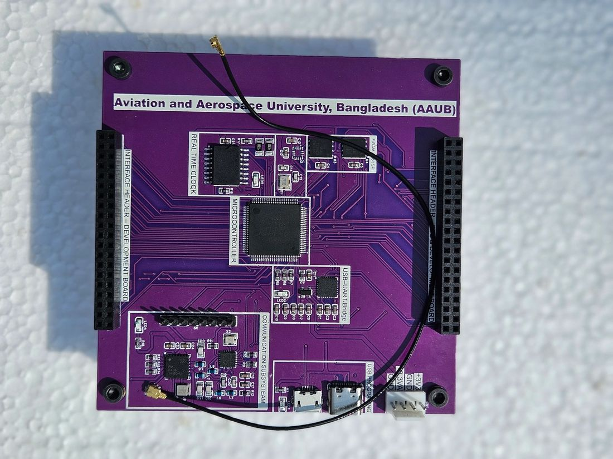
Assembled OBC & Radio board — PC-104 form factor
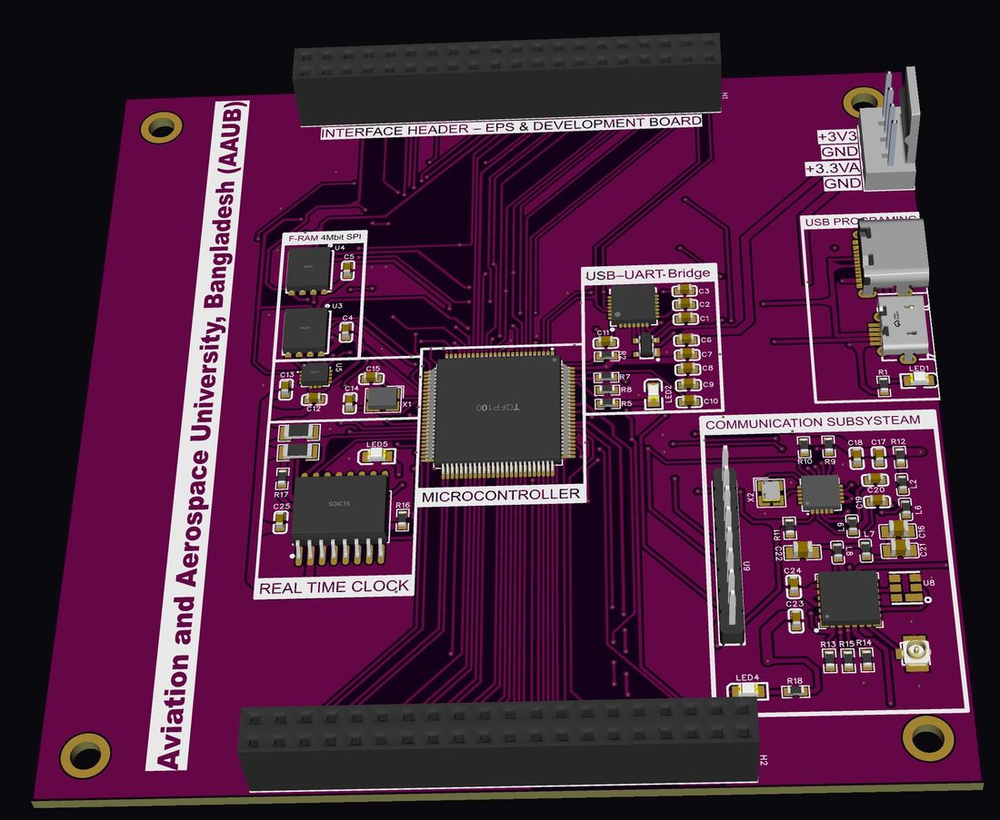
3D render — EasyEDA Pro
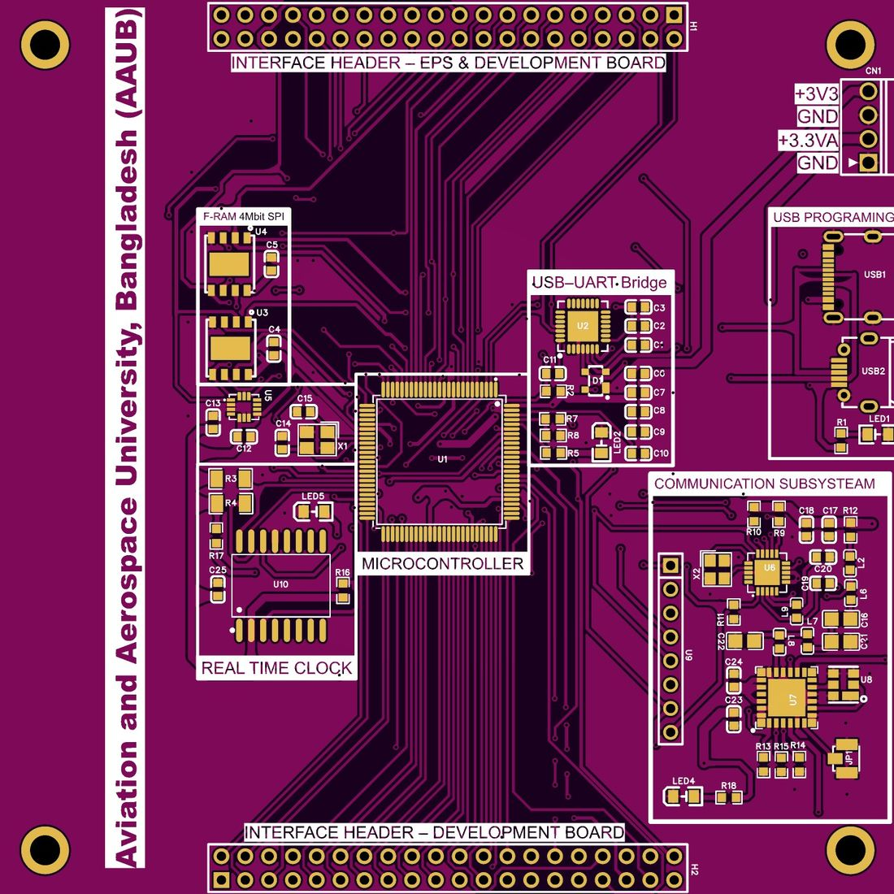
PCB layout — subsystem partitioning
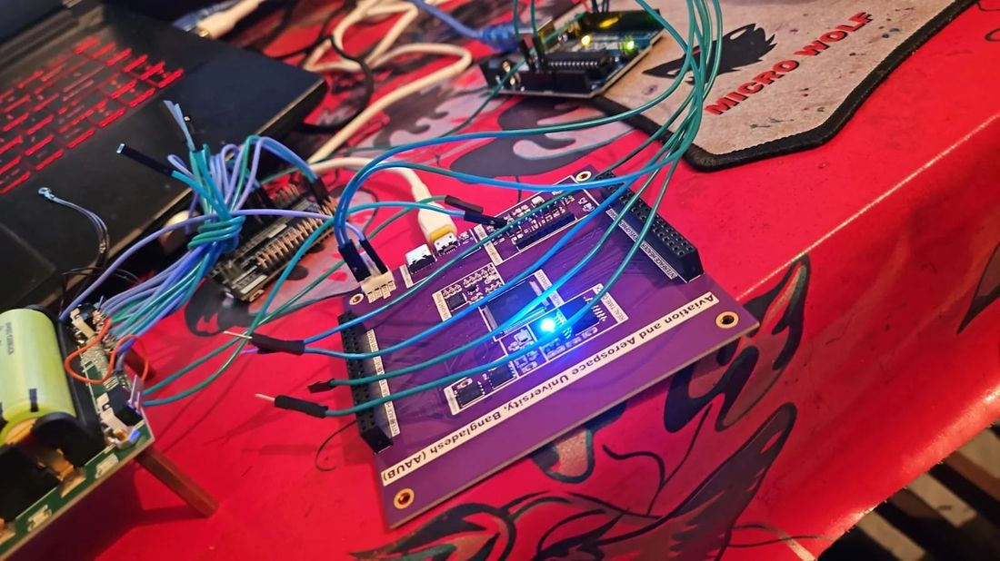
Live bench bring-up and firmware validation
TECHNICAL HIGHLIGHTS
Built around the ATmega2560 (100-pin TQFP) running all satellite housekeeping — power control, sensor polling, memory, communication and real-time telemetry.
Dual redundant 4 Mbit SPI F-RAM (CY15B104Q x2) so critical mission data survives a single memory failure.
UHF link with Si4463 transceiver + RFFM6406 front-end PA; PA bypass mode enables low-power beacon operation during eclipse. SAW TX/RX filters on an isolated +3.3VA analogue rail.
Closed-loop EPS integration — EN_SOLAR, PGSOLAR, PGCHR, STAT1/2 and battery-alarm lines monitored directly by the OBC over the PC-104 header.
BMX160 9-DOF IMU, DS3231 RTC with battery backup, CP2102 USB-UART programming chain — assembled and validated live on the bench.
Outcome Fabricated, assembled and bench-validated as the avionics core of AAUB's indigenous 1U CubeSat programme — the platform behind the Best Thesis Award and two first-author IEEE publications.
A flight-ready Electrical Power System for a 1U CubeSat — distributed N-1 redundant architecture taken from reliability modelling through schematic, 96 x 96 mm PC-104 layout, assembly and a live telemetry dashboard.
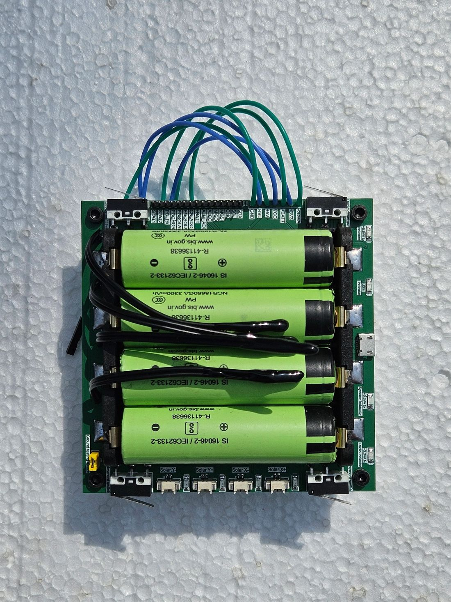
Assembled EPS — 4-cell Li-ion pack with thermistors
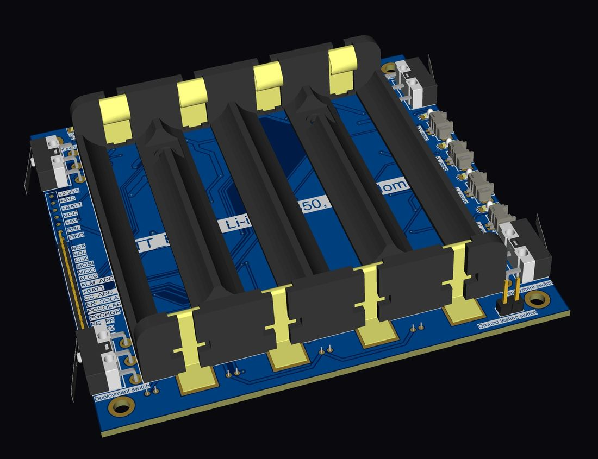
3D render — deployment switches and solar inputs
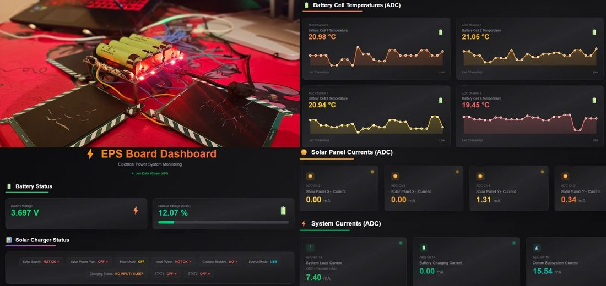
Live bring-up with solar panels + Python telemetry dashboard over SPI/I2C
TECHNICAL HIGHLIGHTS
Distributed N-1 redundant architecture raising modelled reliability from R = 0.797 (conventional) to R = 0.991.
BQ24650 MPPT solar charging with CC-CV control holding SOC above 90% across simulated LEO orbits; converter efficiency sustained above 85% at typical loads.
Power path built on LTC3130 / TPS63020 regulators, LTC4376 / MAX40200 ideal diodes and LTC4362-2 eFuse circuit breakers for per-rail fault isolation.
16-channel telemetry — ADS8688 16-bit SPI ADC, BQ27441-G1 fuel gauge and ZXCT1086 current sensing across cells, solar strings and subsystem rails.
Validated in MATLAB/Simulink (500 km orbit, 35-minute eclipse) and on the bench with a live Python telemetry dashboard.
Outcome Basis of the first-author MEPCON 2025 paper on reliability-oriented distributed CubeSat EPS with N-1 redundancy and hybrid storage.
PROJECT 03
Indigenous 1U CubeSat — Full-Stack Hardware
Undergraduate Thesis — Best Thesis Award
Role: System Architect & Designer of all five subsystems · 2025
A complete flight-ready 1U CubeSat — EPS, OBC, Radio, Antenna and Science Payload, every subsystem architected, designed, fabricated and validated as one integrated PC-104 stack.
Integrated 1U stack with deployed dipole antennas
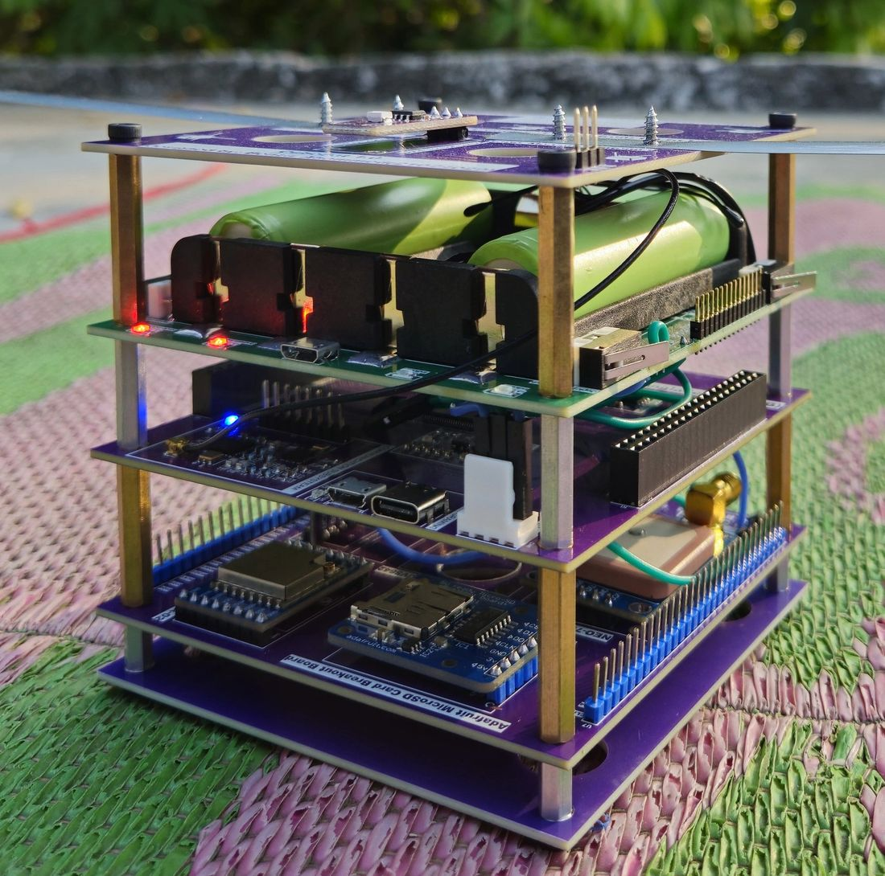
Powered flight stack — all subsystems live
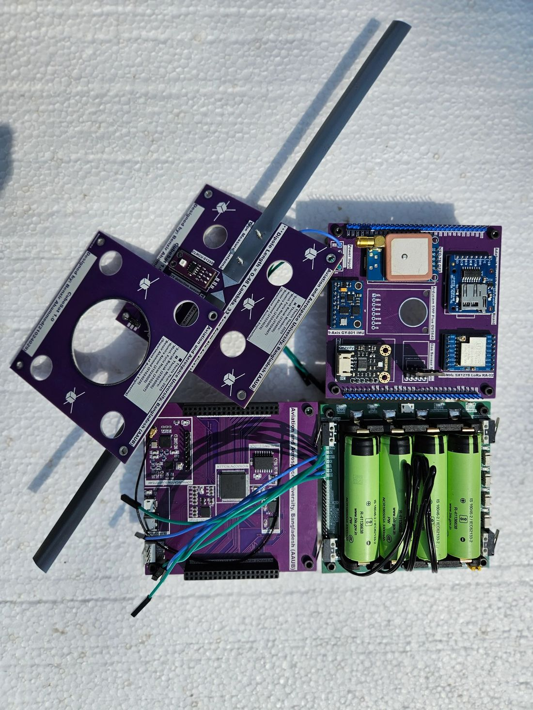
All five subsystem boards, designed in-house
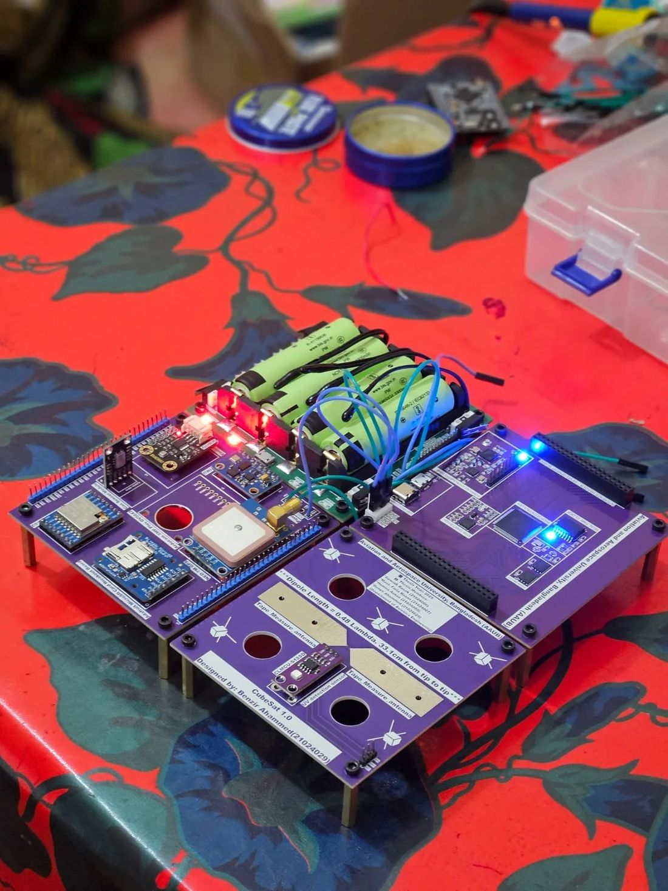
Integration and bring-up on the bench
TECHNICAL HIGHLIGHTS
EPS — BQ24650 MPPT charging, LTC3130 / TPS63020 rails, LTC4362-2 eFuses, ADS8688 16-bit telemetry ADC; N-1 redundant architecture, R = 0.991, validated with a live Python dashboard.
OBC & Radio — ATmega2560 flight computer, Si4463 UHF transceiver with RFFM6406 PA, dual redundant CY15B104Q F-RAM, BMX160 IMU, DS3231 RTC; closed-loop EPS management over SPI/I2C.
A five-panel, 184-cell spacecraft solar array built on AZUR SPACE 3G30A triple-junction GaAs cells — sized, strung and routed for a 2-week LEO direct-solar-feed mission, delivered with a full design and specification report.
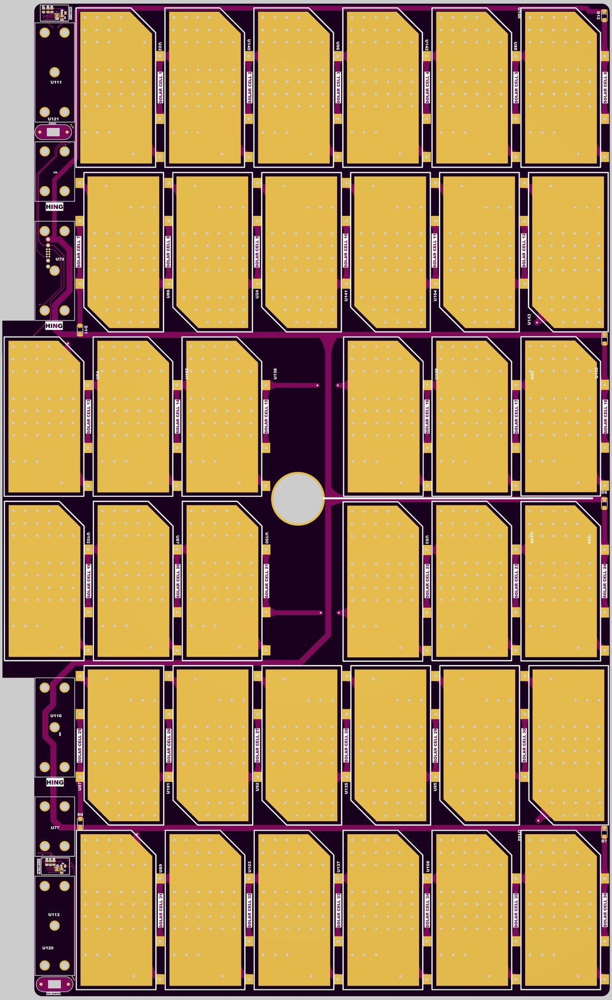
Deployable panel — hinged, with sun sensor
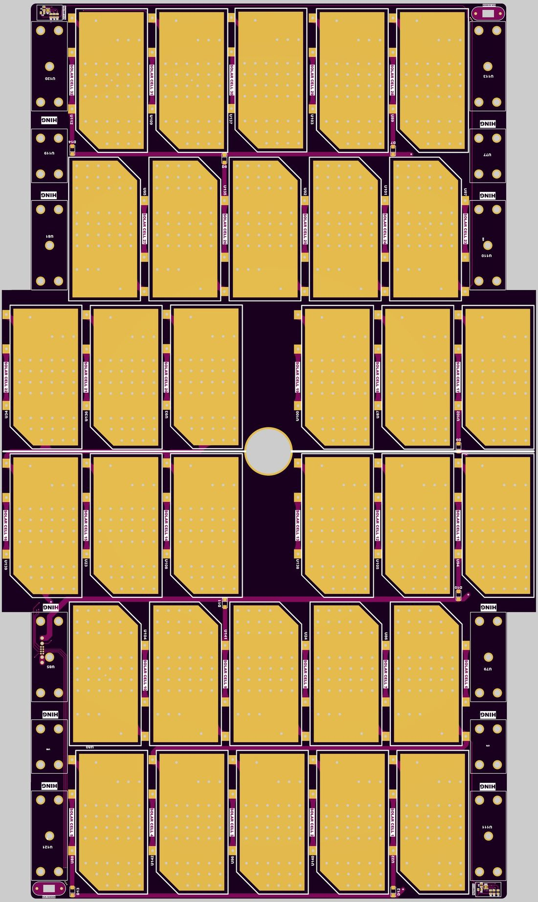
Deployable panel — 2D layout with harness routing
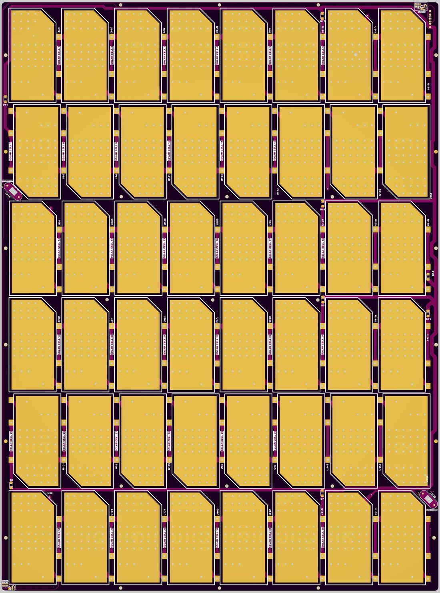
Fixed panel — 48-cell 6S8P, 58.1 W
TECHNICAL HIGHLIGHTS
184 cells across five panels delivering 222.8 W BOL @ 28°C against a 212.6 W mission budget — +4.8% margin.
AZUR SPACE 3G30A triple-junction GaAs (29.3% efficiency, built-in bypass diodes); one fixed 6S8P panel plus four deployables (6S6P / 4S8P), every string self-contained and under 20 V for PCDU MPPT compatibility.
GSFC-STD-7000 compliance engineered in — redundant grounding via bleed resistors (4.3.1.3), bonding ≤100 Ω (4.3.1.4) and all surfaces >10 cm² grounded <1 MΩ for ESD (4.3.1.5).
CSS-10 sun sensor integration for attitude reference; hinged deployable mechanics with routed harness paths.
Outcome Delivered as a final design & specification report (v4) with complete string design, routing rules, grounding, bonding and ESD strategy — part of a continuing R&D engagement with SOLLAB's space solar programme.
PROJECT 05
5-Channel UMPPT PCDU — 28 V Unified Bus, 212.6 W
SOLLAB Co., Ltd. — South Korea
Role: Hardware Design Engineer · Companion unit to the 222.8 W solar array · GSFC-STD-7000 derated
A Power Conditioning and Distribution Unit for a 2-week LEO CubeSat mission — five independent MPPT channels combined onto a regulated 28 V bus, with supercapacitor transient buffering and full protection, sensing and OBC telemetry.
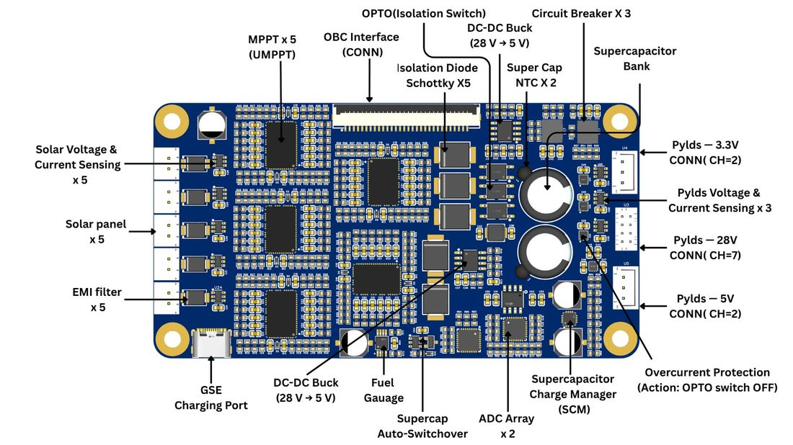
PCDU board — annotated subsystem map
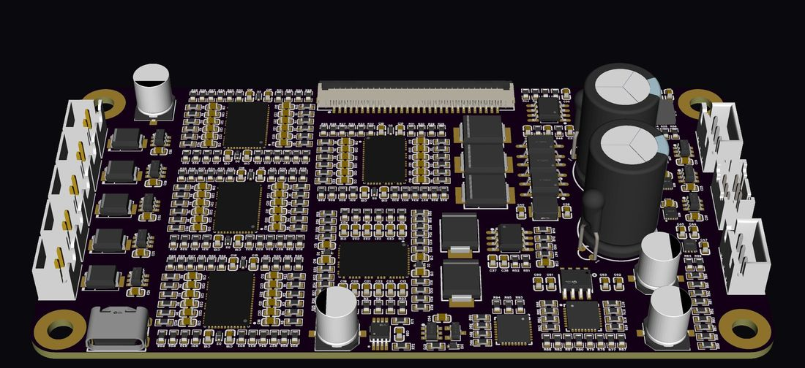
3D render — supercapacitor bank and 5-channel MPPT tiers
TECHNICAL HIGHLIGHTS
5-channel UMPPT topology — one LT8490 synchronous buck-boost MPPT controller per solar panel, combined via Schottky isolation diodes onto a 28 V unified bus; distributes 212.6 W across 3.3 V, 5 V and 28 V rails (11 payload channels).
Supercapacitor buffer (2x BCAP0350, 175 F / 5 V) with charge manager and auto-switchover for pulsed-load support on the 5 V rail — no battery, direct solar feed.
Per-channel two-stage EMI filtering with TVS clamping (SMBJ series, 3x V_oc derating) and INA181A1 high-side voltage/current sensing into an ADS7953 ADC array for closed-loop P&O MPPT.
Layered protection — three circuit breakers, opto isolation switch for overcurrent action, isolation diodes, fuel gauge and dual NTC thermal monitoring, all telemetered to the OBC.
All COTS power ICs derated per NASA GSFC-STD-7000; SMD packaging validated against Falcon 9 / Electron launch vibration profiles.
Outcome Delivered as a full design and analysis report with the annotated board and fabrication-ready layout — the power core of SOLLAB's CubeSat mission, feeding from the 184-cell array of Project 04.
PROJECT 06
MPPT Solar Charge Controller — 300 W Class
International client — commercial delivery
Role: Electrical & PCB Design Engineer · 2026
A microcontroller-driven boost converter charging a 45-cell LiFePO4 pack directly from a solar array, delivered with a 33-page design report traceable to manufacturer datasheets.
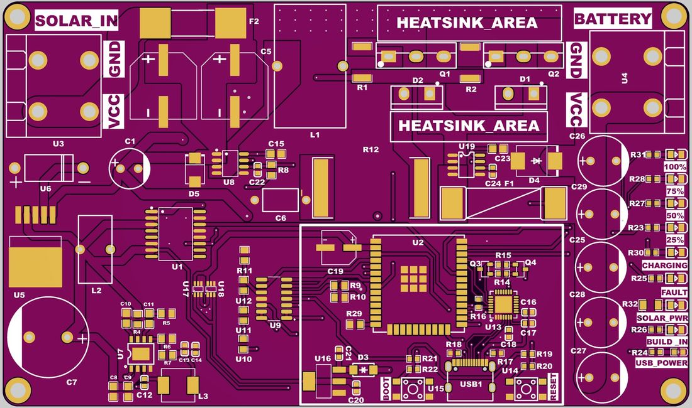
PCB layout — power stage, heatsink areas and status LED bank
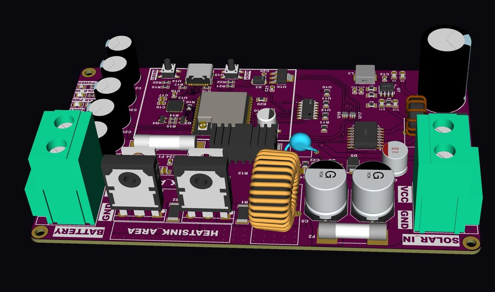
3D render — ESP32 control section, toroidal inductor and TO-220 power devices
TECHNICAL HIGHLIGHTS
50 V VOC / 8 A ISC solar input → 164 V, 45S LiFePO4 output at approximately 300–330 W charge power.
Single-switch non-isolated boost topology with paralleled MOSFETs, IR2110 high-side gate drive and a tuned RC snubber.
Isolated Hall-effect current sensing (ACS711 / ACS712) on both input and output with an OPA4340 analogue front end for MPPT and Coulomb counting.
Three independent auxiliary rails (12 V, 3.3 V main, 3.3 V USB) with LM66100 power-path isolation to combine sources safely.
Every passive value derived from first principles — inductor and capacitor sizing, divider ratios, snubber values and heatsink thermal budget.
Outcome Delivered a fabrication-ready 2-layer design with Gerbers, drill and pick-and-place files, a fully LCSC-sourced BOM, a 33-page hardware design report and a companion firmware specification covering GPIO mapping, ADC scaling and the charge state machine.
PROJECT 07
4S→6S Series-Injection Drone Power Module — 150 A Burst
FPV drone platform — international client (under NDA)
Role: Electrical & PCB Design Engineer · 2026 · Design verified from first principles before layout
A bidirectional battery power-boost module that series-injects a 2S booster pack onto a 4S main pack for burst propulsion — sixteen paralleled power FETs, hardware-latched protection and full analytical verification ahead of schematic capture.
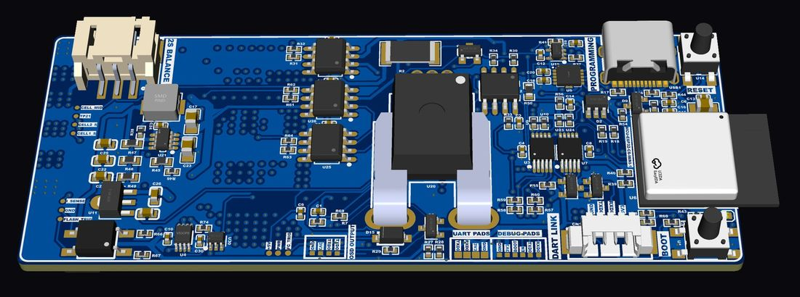
Control side — ESP32-C6, isolated sensing and programming chain
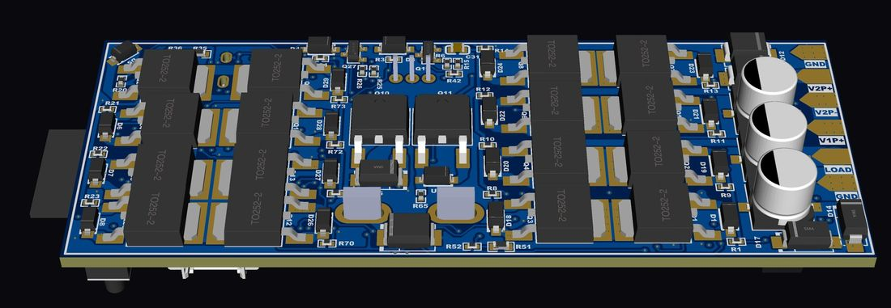
Power side — sixteen TO-252 FETs on 2 oz thermal planes
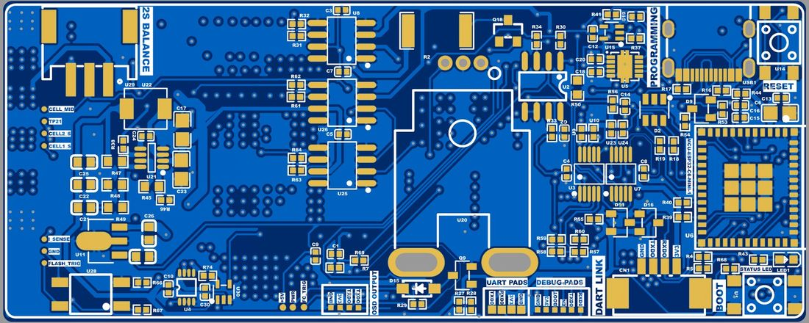
Top layer — 2S balance, differential cell sensing, UART/debug
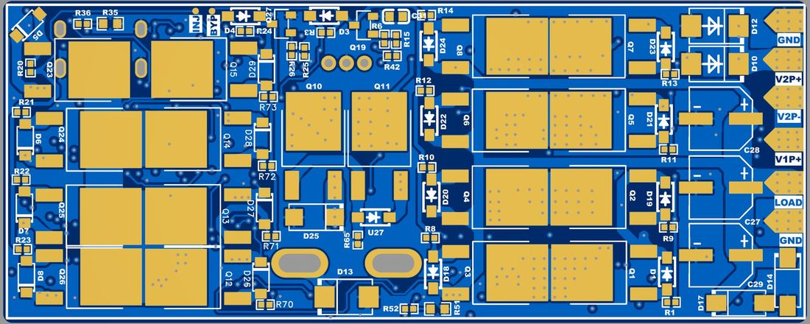
Bottom layer — bypass and inject FET banks with gate networks
TECHNICAL HIGHLIGHTS
8 + 8 NCE60P50K FET banks — back-to-back bidirectional bypass pairs plus a unidirectional inject bank rated for 150 A boost bursts, each device on a dedicated 2 oz copper plane with via stitching.
Firmware-independent protection — ACS758 current sensing into an LM393 hardware SR-latch over-current trip, gate Vgs zener clamps, SMBJ30A TVS coordination and RC break-before-make dead time.
Floating-pack instrumentation — INA149 difference amplifiers with ADS1115 ADC measure individual 2S cell voltages riding 16.8–25.2 V above ground.
Precharge circuit tames ESC bulk-capacitor inrush; XL2596S buck rail powers the ESP32-C6 control and telemetry link.
Every stage validated analytically at worst case (junction temperature, clamp currents, divider chains) in a formal Design Verification Report gating schematic capture.
Outcome DVR-gated design flow — verification report, LCSC-sourced BOM and KiCad schematic delivered, with layout thermal rules and a proof-board test plan; identified and corrected a critical under-sized FET bank specified by the client.
Role: PCB Design Engineer · 2026 · 36 x 36 mm, 4-layer, released fab-ready
A compact flight-controller-class board that measures aircraft bearing with a UWB radio array, sits inline on the pilot's control and video links to overlay warnings — and keeps the pilot in control even if the board loses power.
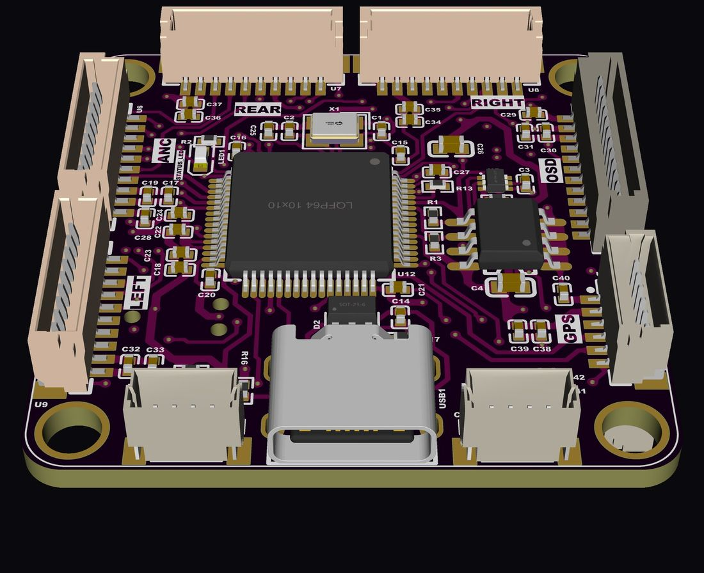
Top — STM32G473, UWB array ports (LEFT / RIGHT / REAR / ANC)
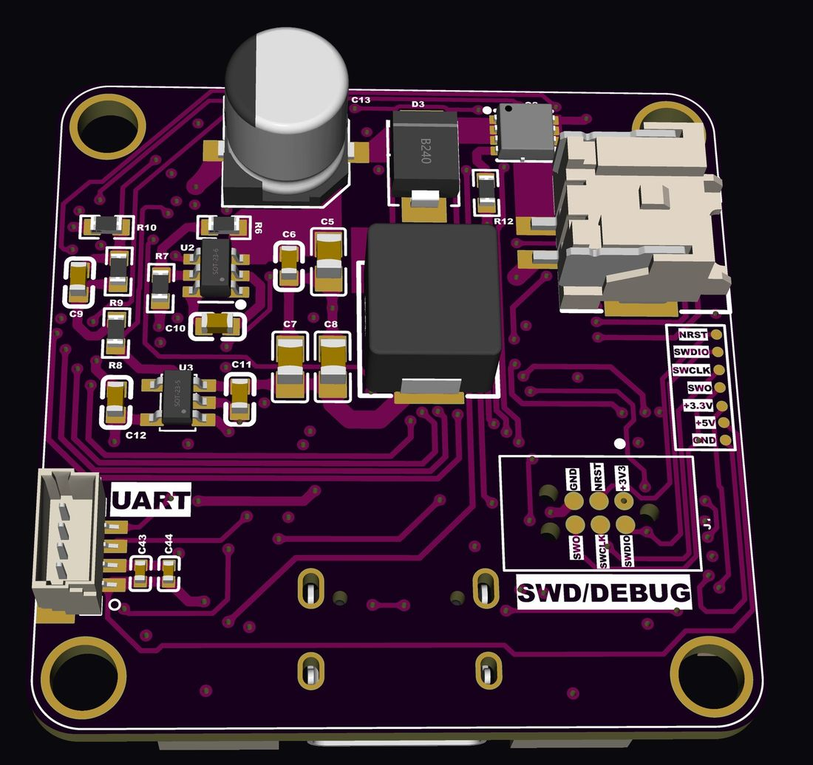
Bottom — buck power stage, UART and SWD/debug
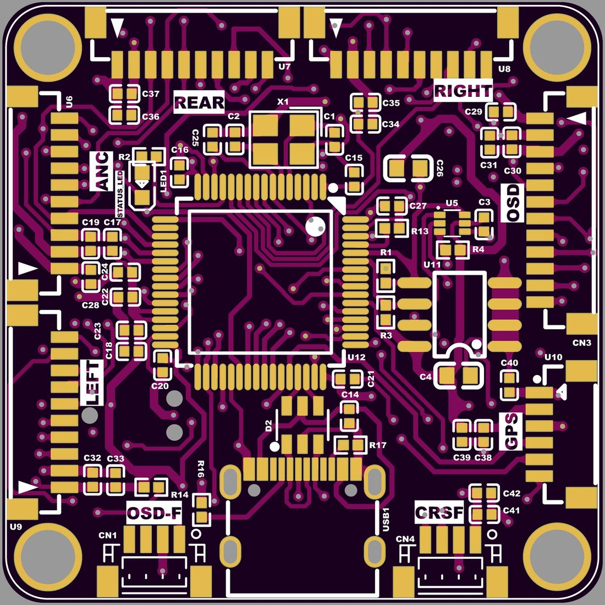
Top layer — MCU fan-out, OSD, GPS and CRSF ports
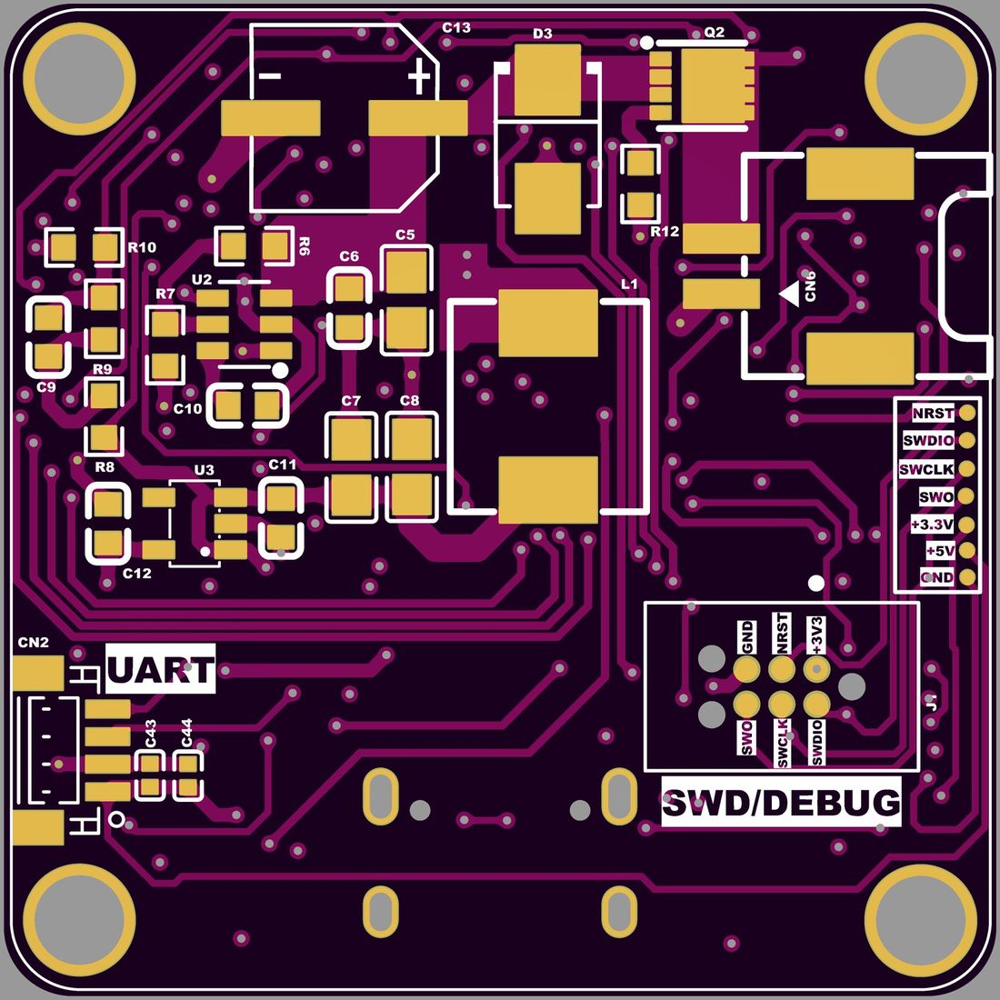
Bottom layer — power entry, 5 V buck and debug breakout
TECHNICAL HIGHLIGHTS
STM32G473 (Cortex-M4, 170 MHz) orchestrating a 3-receiver + anchor DW3220 UWB array for phase-difference-of-arrival (PDoA) direction sensing.
CRSF inline pass-through with hardware fail-safe bypass — the pilot's RC link survives even total board power loss.
OSD warning overlay onto the pilot's video feed — digital VTX on the main board, analog via a companion daughterboard.
4S LiPo input (12–16.8 V) with reverse-polarity P-FET and TVS protection into a 5 V buck and 3.3 V LDO; GPS, USB-C DFU, SWD debug, temperature sensor and EEPROM.
36 x 36 mm, 4-layer, 1 oz copper on the standard 30.5 mm M3 pattern — solid inner ground plane, via-stitched pours, 90 Ω length-matched USB pair; all pins verified against the STM32G473 datasheet.
Outcome Released fabrication-ready to JLCPCB with native EasyEDA Pro source, netlist and BOM after a documented client design review — every review finding closed and verified.
PROJECT 09
Flight-Ready CanSat — AAS International Competition
American Astronautical Society — United States
Role: Electrical & Mechanical Lead · June 2025
A can-sized satellite designed, built and flown in international competition, placing in the top 40 percent of a global finalist field.
TECHNICAL HIGHLIGHTS
System architecture and custom PCB design for the full avionics stack.
Fabrication, assembly and flight-readiness validation of the integrated vehicle.
Resilient power architecture for a reusable, recoverable small-satellite class.
Outcome16th place among 40 international finalist teams, United States, June 2025. Design experience published as a first-author IEEE paper on resilient CanSat power systems.
PROJECT 10
Rover-71 — Anatolian Rover Challenge
ARC'25 — Turkey
Role: Electrical Lead · 2025
Electrical architecture and power integration for an indigenous Mars rover platform competing against 27 international teams.
TECHNICAL HIGHLIGHTS
Complete electrical architecture for drive, control and power distribution.
PCB integration and system-level testing across mechanical and software teams.
Field validation under competition conditions.
Outcome8th position globally (83.83%) among 27 international teams at ARC'25, Turkey. Co-authored an IEEE TENSYMP publication on the rover's electro-mechanical design.
03 · EXPERIENCE
Experience
Executive Electrical Engineer
Palki Motors Limited — Dhaka, Bangladesh
JAN 2026 — PRESENT
Battery pack, BMS and motor-controller R&D for Bangladesh's first indigenous electric vehicle. Cell balancing, SoC estimation, thermal management and layered fault protection.
Freelance PCB & Embedded Hardware Engineer
Fiverr & Freelancer.com — international clients
2025 — PRESENT
Satellite power systems, drone power modules and flight controllers for clients including SOLLAB Co., Ltd. (South Korea) — ongoing R&D engagement.
PCB Design Engineer (R&D)
Robotry BD — remote, part-time
OCT 2023 — JUN 2025
Multi-layer PCBs for commercial IoT products, end to end — schematic capture to production DFM release.
BSc in Aeronautical Engineering (Avionics)
Aviation & Aerospace University Bangladesh
2022 — 2025 · CGPA 3.41 / 4.00 · BEST THESIS AWARD
Thesis: complete indigenous 1U space-grade CubeSat — all five subsystems designed, built and validated.
04 · RESEARCH
Publications
01
A Framework for Resilient Power Systems in CanSat-Class Reusable Small Satellites